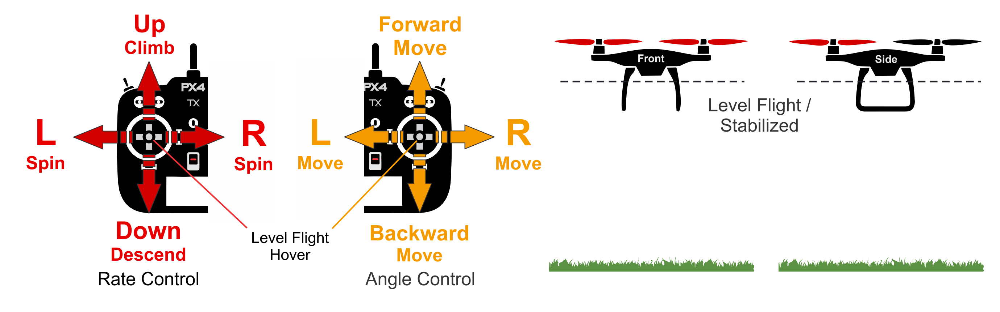

MANUAL手动模式
手动模式下，摇杆的杆量直接映射到飞机的运动。多旋翼的人工模式和固定翼人工模式有很大差别，多旋翼遥控器映射为姿态角，固定翼则直接将遥控器输出到Mixer。
人工模式需要遥控器
多旋翼
由于多旋翼是静不稳定飞行器，因此是无法直接人工飞行的，因此多旋翼是没有正真意义上的人工模式，PX4将多旋翼人工模式升级为增稳模式（遥控器控制角度）。

多旋翼在人工控制模式下，驾驶感映射的物理量如下：
| 方向 | 压杆 | 松杆 |
|---|---|---|
| ROLL（滚转） | 映射为滚转角 | 对应0°滚转角 |
| PITCH（俯仰） | 映射为俯仰角 | 对应0°滚转角 |
| YAW（偏航） | 映射为偏航角速率 | 保持当前偏航角 |
| THROTTLE（油门） | 通过缩放直接输出到混控器 | 输出MPC_THR_HOVER |
一旦松杆，遥控器回中，此时多旋翼会自动改平，并保持水平姿态，但是高度xxxxxxxxxx
参数
| 参数 | 说明 |
|---|---|
| MPC_THR_HOVER | Hover throttle that is output when the throttle stick is centered and MPC_THR_CURVE is set to default. |
| MPC_THR_CURVE | Defines the throttle scaling. By default this is set to Rescale to hover thrust, which means that when the throttle stick is centered the configured hover throttle is output (MPC_THR_HOVER) and the stick input is linearly rescaled below and above that (allowing for a smooth transition between Stabilized and Altitude/Position control). On powerful vehicles the hover throttle might be very low (e.g. below 20%) so that rescaling distorts the throttle input - i.e. here 80% of the thrust would be controlled by just the top half of the stick input and 20% by the bottom. If needed MPC_THR_CURVE can be set to No Rescale so that there is no rescaling (stick input to throttle mapping is independent of MPC_THR_HOVER). |
固定翼
固定翼的人工模式和多旋翼人工模式有很大差别：
| 内容 | 多旋翼 | 固定翼 |
|---|---|---|
| 增稳模式 | ||
| 是否开环 | 否 | 是 |
| 操控难度 | 较难 | 难 |
| 俯仰和滚转杆 | 水平姿态角 | 直接输出到Mixer |
| 偏航杆 | 偏航角速率 | 直接输出到Mixer |
| 油门杆 | 直接输出到Mixer | 直接输出到Mixer |